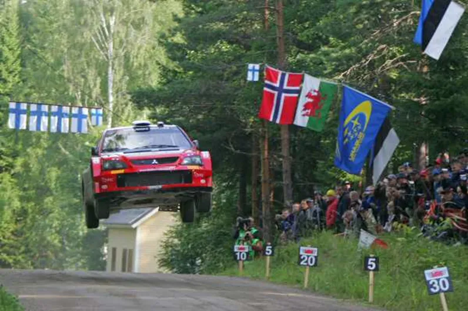
Top 30 Stages in WRC History: 1-5
The poll is closed, and the results are ready to be announced!
We asked you for your favorite WRC stages and you had your say. Each voter selected 15 stages out of a pool of 100, and the 30 stages that had the most votes, combined with our experts’ ratings made it to our list. This was a collaboration between us and Antti from itgetsfasternow.com, this list wouldn’t have been possible without him, so please go check his blog. He will have his own unique post based on this list when all the stages are revealed.
Throughout this month we’ll be going through the results, and this is the final part, these are the last 5 stages! So here we go:
5 – Whaanga Coast – Rally New Zealand
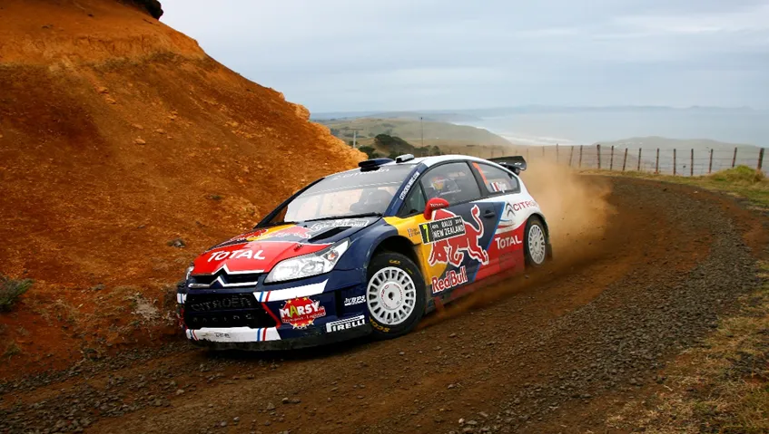
We start out our Top 5 with Rally New Zealand’s Whaanga Coast. This sea-side gravel road is a legendary Rally New Zealand stage, and a favourite among drivers and fans alike. Whaanga Coast first appeared in the WRC back in 1990. Debuting as Whaanga Road, this first version of the stage only featured the iconic, sea-side, flowing and cambered part. After 1990, the stage adopted it’s classic and commonly used 29-kilometre layout. Ever since 1991, Whaanga Coast has featured in every Rally New Zealand, with the exception of 2003, with the layout being virtually unchanged. The only significant change Whaanga Coast has had is that after 2001, the stage has been ran in reverse, with the stage finishing in the sea-side part rather than starting from it. The stage itself is actually one of the slowest of Rally New Zealand, with it being the slowest (non-manmade) stage of the 2022 rally. But what the stage lacks in speed, it has in flow, with the stage featuring many cambered bends and crests, that make the stage a joy to drive. The first part of the stage is semi-fast, with the famous part next to the sea being more twisty and technical.
Famous moments include a four-way fight for the lead in 2010 between Latvala, Loeb, Solberg and Ogier with all of four suffering problems or crashing in Whaanga Coast, Greensmith winning the stage and Breen going off in 2023, Latvala and Duval crashing in 2008, Hirvonen getting a puncture and spinning handing the lead to Loeb, Xevi Pons winning the stage by 11s in 2006, Petter Solberg spinning and losing the lead, as well as Duval crashing and Rovanpera losing a minute in 2004, Colin McRae going off in 2002, Colin McRae retiring from the lead in 1999 and Colin McRae going 14s fastest than everyone in 1994 and going into the lead of the rally.
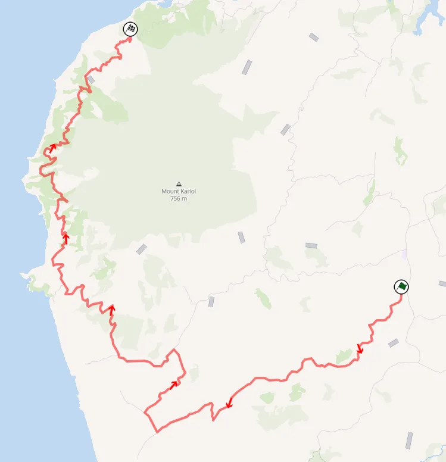
Map of Whaanga Coast.
4 – Sisteron – Rally Monte Carlo
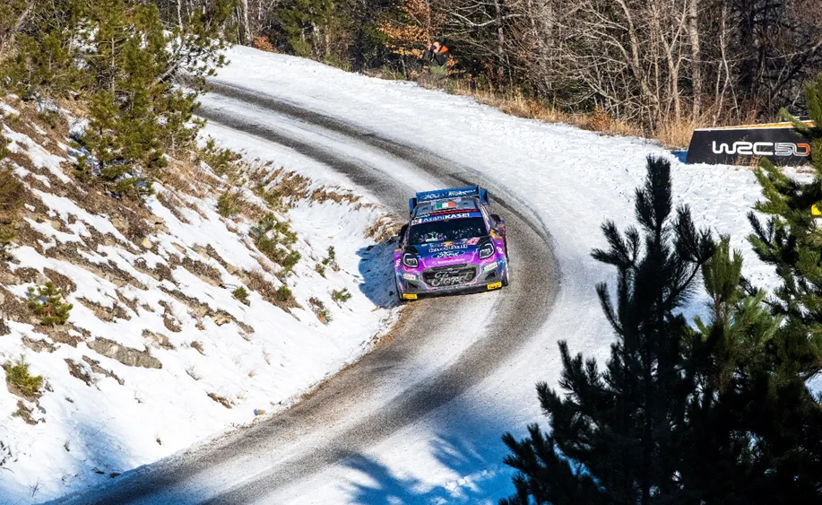
f you are an old season review buff like myself, you’d know this stage as “The Mighty Sisteron”, as this was what it would be called by the commentator. And that name is no fluke. Sisteron is known for its unpredictable conditions, with the drivers having to face every Monte-Carlo condition possible, in just 36km. First ran in 1979, Sisteron has its own chapter in Rally Monte-Carlo’s history. From 1979 to 2002, the stage was only absent from the rally in 3 occasions. After an 11 year absence, Sisteron returned for 2013, and featured regularly, always as a one-pass stage until 2018. In 2022, the stage abandoned the Sisteron part, and started at the village of St Geniez, shortening it’s milage to 20km. It still featured snow though, and was the stage that gave us the most drama in 2022. It was also set to be ran for 2023, but it was cancelled due to the road being in a poor state, but it’s set to be back for 2024 as the opening test. Running from the town of Sisteron to the village of Thoard (or vice-versa), the stage climbed the mountain, and then descended it. That meant that the crews were likely to encounter both dry conditions at the start and finish of the stage, and full snow and ice conditions on the top of the col. That meant that tyre choice was a headache for the drivers, with many ending their rallies in Sisteron.
Famous moments include Elfyn Evans and Katsuta going off the road and Tanak crashing out in 2022, Thierry Neuville getting stuck in a ditch and losing 4 mins in 2018, Kris Meeke breaking his gearbox in a compression and retiring from 2nd in 2016, Sebastien Loeb going 18s faster than everyone and into the lead in 2002, Tommi Makinen losing the lead to Pierro Liatti in 1997 after a wrong tyre call, Colin McRae crashing out of the rally in 1995 and Carlos Sainz crashing out in 1989.
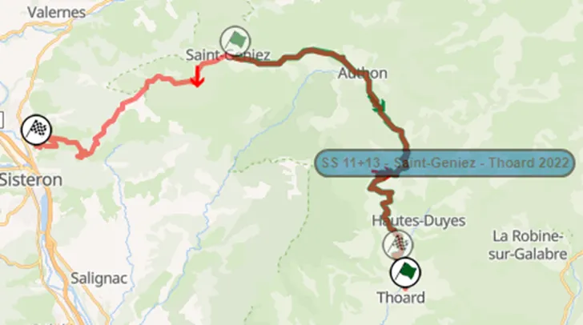
Map of Sisteron-Thoard, along with the 2022 stage.
3 – Panzerplatte – Rallye Deutschland
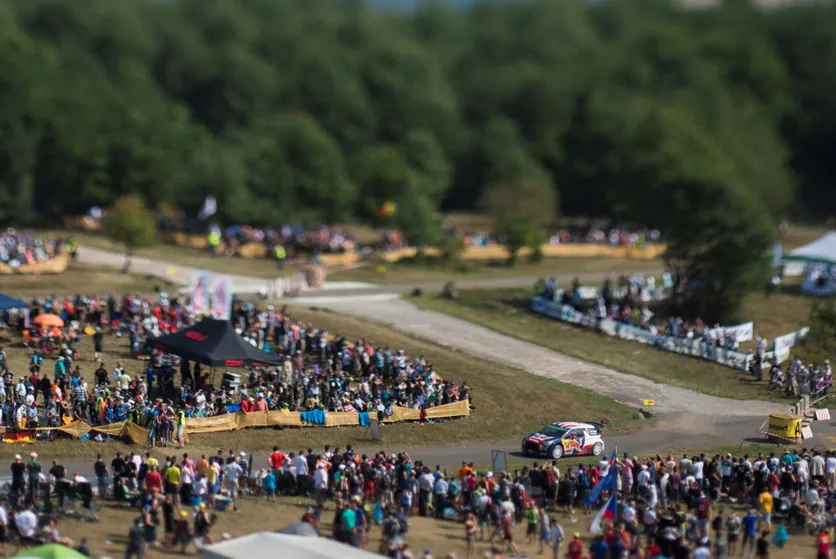
Located in the Baumholder Military area, Panzerplatte is a stage that brings fear to the drivers. First used in 2002 in the inaugural Rallye Deutschland, Panzerplatte featured in every edition until the rally went out of the calendar in 2020. Panzerplatte is famous for its hinkelstein stones, that were designed to keep the tanks on the road. These trapezoid shaped rocks are a known hazard and claimed countless victims in that 18-year span.
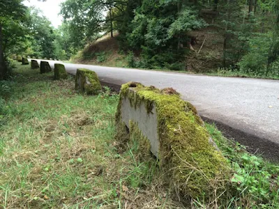
The famous Hinkelsteins.
Panzerplatte is another stage that has used a myriad of different layouts along the years, utilizing the many service roads of the military base. What most of these layouts have in common is the difficulty. The stage is a very rough stage even if the drivers keep their car on the road, as the surface changes from concrete and very abrasive asphalt that kills the tyres, to smooth tarmac that you’d find on a highway. On top of that, Panzerplatte is also traditionally a very long stage, with all of the non sss versions being over 30km long. In 2010 and 2012 the stage was 48 and 46 kilometres long, without even having the same start or finish! Another characteristic this stage is famous for is Gina’s jump. The part of the stage that was used in the Arena Panzerplatte stage is known as Gina, with Gina referring to Italian actress Gina Lollobrigida. This section of the stage from the map vaguely resembles curves that someone could see on a person, and the Germans decided to pay tribute to the Italian actress by naming this section in her honor. The jump comes after a flat-out section and is a spectator favourite, as cars go flat-out and have a long-distance jump. It is also worth mentioning that some other stages have shared parts of their route with Panzerplatte in the early years of Rally Germany, namely Hahlkreuz and Maiwald in 2002 and 2003.
Famous moments include Sebastien Ogier and Thierry Neuville both getting punctures in 2019, Sebastien Ogier getting a puncture and dropping out of winning contention in 2018, Thierry Neuville’s suspension collapsing in 2017, Stephane Lefebvre having a massive accident in 2016, Bryan Bouffier clipping a hinkelstein and rolling out of the rally in 2014, Ott Tanak, Petter Solberg and Thierry Neuville all crashing in 2012, Sebastien Loeb losing the win to Sebastien Ogier in 2011 because of a puncture, Petter Solberg having a massive accident in 2004 and Achim Mortl, Philippe Bugalski, Armin Schwarz, Petter Solberg and Toni Gardemeister going off in the tricky wet conditions of 2002
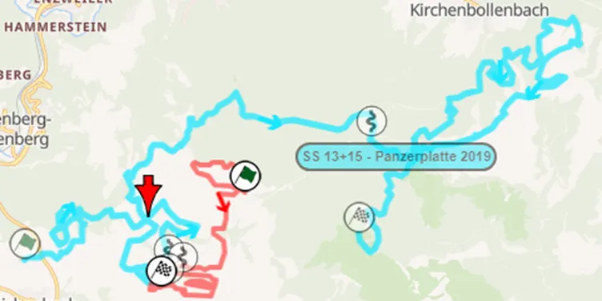
The 2019 versions of Arena Panzerplatte and Panzerplatte.
2 – Col De Turini – Rallye Monte Carlo
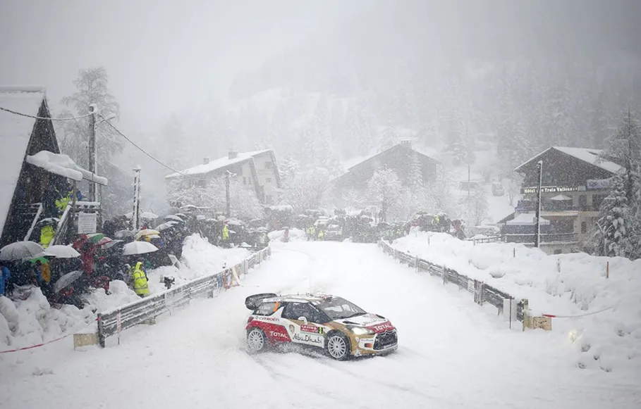
Standing 1700m high in the French Alps, Col De Turini is a stage that characterizes Rally Monte Carlo. First ran in the 70s, this river of tarmac is full of hairpins and is known for its pass through the Col De Turini Mountain pass. Col De Turini has featured in the WRC with many different names, either as Col De Turini, or depending from where the stage starts and finishes, one could find the names La Bollene Vesubie, Peira Cava, Moulinet and Sospel. Just know if you see either of these, it means the stage has the Col De Turini in it. To simplify stuff, there’s three different versions of this stage that you need to know about. The version of Col De Turini that goes from La Bollene to Peira Cava (or vice versa), the version that goes from La Bollene to Mulinet (or vice versa) and the version that goes just a bit further from Moulinet, to Sospel.
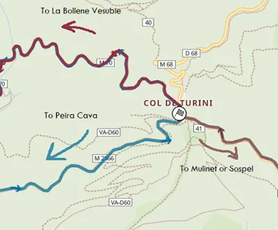
A simple diagram that shows what version of the stage you are watching based on where the cars go when they are on the Col.
There are some other versions of Col De Turini worth mentioning, namely last year’s powerstage, with the stage starting in La Bollene and ending on the Col (a similar layout was also used in 1997), and Col de Braus - La Bollène-Vésubie from 2009 (in the IRC though), which is a combination of La Bollène-Vésubie – Peira Cava, Col De Braus and Luceram. A feature of this stage is the changeable conditions drivers face when climbing up to the Col, with snow and ice being something the crews would encounter regularly, especially back in the day. The stage is technical with many downhill and uphill hairpins, especially in the Mulinet/Sospel part of the stage. In contrast, the part of La Bollène-Vésubie on the approach to the Col is more fast and flowing. When the stage was ran in the dark, the atmosphere in Col De Turini had the nickname of “the night of the thousand knives”, with French and Italian fans lighting flares on top of the Col, making for an atmosphere that I could not make justice to just from text.
Famous moments include Kalle Rovanpera shockingly being the slowest of the Rally1 drivers on SS2 in 2022, Esapekka Lappi and Bryan Bouffier going off but continuing in 2018, the slippery conditions drivers had to deal with when it started to snow in the powerstage in 2017, Robert Kubica crashing after the stage end in 2016, the massive snow of 2013 that led to the 3rd pass that was the powerstage being canceled, Sebastien Loeb being the fastest in 2/3 runs en route to 2nd despite super rallying in 2006, as well as Xevi Pons spinning three times in one pass, Petter Solberg and Marcus Gronholm going off in 2005 on the same spot, Colin McRae spinning on top of the Col in 2002, Colin McRae retiring from the lead when his Focus developed a mechanical fault in 2001 and again in 2000 this time from 3rd, Gilles Panizzi crashing off from 2nd in 1999, Gilles Panizzi going fastest in 1998 in the F2 Kit Car, Didier Auriol and Armin Schwarz retiring in 1995, Francois Delecour losing out on a maiden win in 1991 after going off and losing 5 mins, with the Frenchman being inconsolable at the finish.
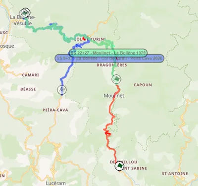
La Bollene, Moulinet, Sospel and Peira Cava. All passing through the Col De Turini.
1 – Ouninpohja – Rally Finland
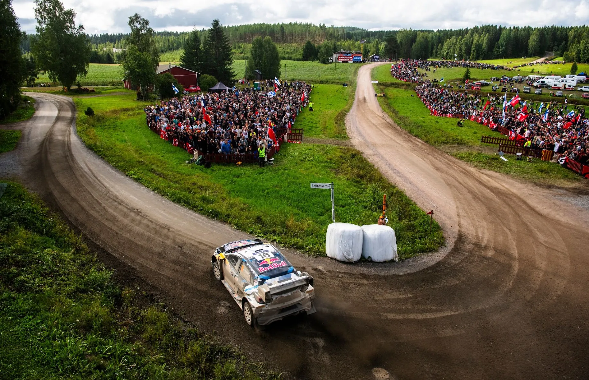
Is anyone really surprised? Ouninpohja makes it as the best stage in the history of the WRC! And what a stage. First ran in 1966 as Alhojärvi, Ouninpohja is a legendary road with a long history in rallying. The legendary name “Ouninpohja” first appeared in 1967. Before I start describing Ouni’s history, I have to give you a small rundown of the parts of the stage I will be describing later on.
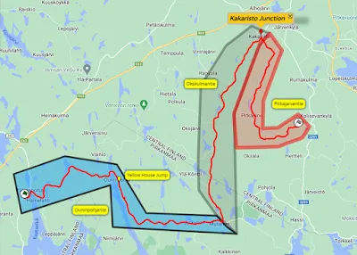
The 3 different roads that make up the classic Ouninpohja route, along with where the Yellow House Jump and where the Kakaristo Junction is. Two famous Ouni spots.
From 1971 to 1985, the stage started in the famous Kakaristo junction and finished at Hämepohja, in the reverse direction of the modern stage. In 1986, the stage was ran as a 7.3km stage starting at the yellow house jump, and finished again at Hämepohja. The stage of Rapsula was also in the 1986 route, utilizing parts from the Okskulmantie part of the stage. In 1987, the classic Ouni route was basically split into 3 parts, with Rapsula again utilizing the Okskulmantie road, and parts of Ouninpohjantie as well. Konivuori used a combination of a route last used by Hassi in 1993, that joined the Ouninpohjantie and finished 3km before Hämepohja. And Ouninpohja itself started near where Rapsula did, and joined the traditional Ouni route near the yellow house, and finished in Hämepohja. The name Ouninpohja was absent from a 1000 Lakes itinerary for the subsequent 4 rallies, but stages like Konivuori, Hassi and Rapsula all used parts of the legendary stage. The stage returned in 1992, using the Pitkäjärventie road for the first time. Its length was 30km, and ended at the Square Left junction that leads to the flatout section before the yellow house jump. The same route was used in 1993.
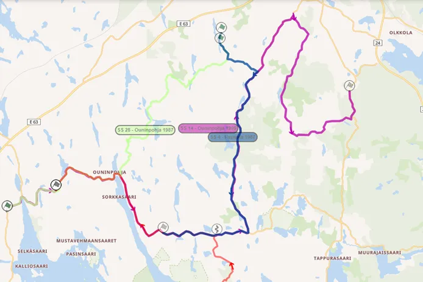
The dichotomized 1987 route. With red is Konivuori, in purple is the modern classic Ouni route, in blue is Rapsula and in light green is 1987 Ouninpohja.
1994 was the first time Ouninpohja used the 32km route we are all familiar with, only in reverse. From 1995 to 2004 the version of Ouninpohja that we all know, the modern legendary route, was ran. The stage started from Hämepohja and ended at Pitkäjärventie, a 34km blast, full of trials and tribulations. The stage was split into 2 briefly in 2005 and 06, with Ouninpohja East and West making up the route. The stage returned to its full format in 07 but with added chicanes, but was absent again for the next 5 years. Hassi and Kakaristo used parts of Ouni in 2011 and 2008 respectively. The stage returned for 2012, and remained the same until 2015, running in reverse for 2016. The 2017 WRC cars effectively forced Ouninpohja out of use, with the last time that the stage was ran in name being in 2017, and even then, it was with a series of chicanes, with the stage ending in the Kakaristo junction. Rally Finland organizers have used parts of it since (Rapsula and Kakaristo), but only the slower parts of Pitkäjärventie and the northern parts of Okskulmantie that lead to the Kakaristo junction.
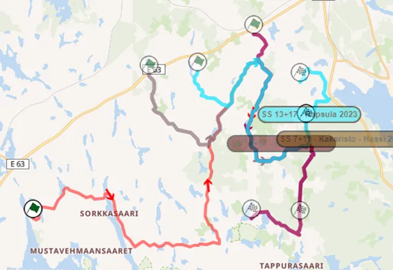
Rapsula, Kakaristo and Kakaristo Hassi. The stages that have used parts of Ouninpohja since 2018.
That’s the basics for Ouninpohja, if you want to learn more about the history and with more detail, check Antti’s series about Ouni here. The Ouninpohjantie part of the stage is fast, known for its flat out section and the yellow house jump. It is still quite technical, with many drivers getting caught out especially in the beginning. Okskulmantie is wider and more staright forward than the previous part, especially the parts not used by Rapsula or Kakaristo nowadays. After Kakaristo’s junction, Pitkäjärventie is a narrower and a lot more technical part. It’s a lot more rough and a real big change of rhythm compared to the previous parts. The stage rejoins a wider road and finishes on a flatout section.
Famous moments include Jari Matti Latvala retiring from the lead in 2017, Kris Meeke's record run in 2016, Meeke rolling out in 2013, Craig Breen's roll in 2012, Marcus Gronholm going more than a second per kilometre faster than everyone and Loeb getting a puncture in Ouninpohja East in 2006 as well as Petter Solberg, Xevi Pons and Dani Sordo all crashing out in Ouninpohja West, Sebastian Lindholm and Kristian Sohlberg crashing out in 2004, Marcus Gronholm ripping a wheel of his 206 in 2003, Richard Burns breaking his 206's cooling in the yellow house jump and losing the lead in 2002, Toni Gardemeister crashing out of the rally in 2001, Marcus Gronholm going off in 1998, Marku Alen going into the lead on the first pass in 1985 and Hannu Mikkola going fastest on the 2nd pass despite a battered Quattro and Timo Makinen driving his Mini Cooper S blind because his bonnet had gone up and obstructed his view through the windshield in 1968.
If you made it this far, and read all 6 parts of this series, I want to say a massive thank you! You are a legend. I also want to give a special thanks to Antti, for helping me along the way, this wouldnt have been possible without him. Stay tuned for his special post about the Top 30!


Comments